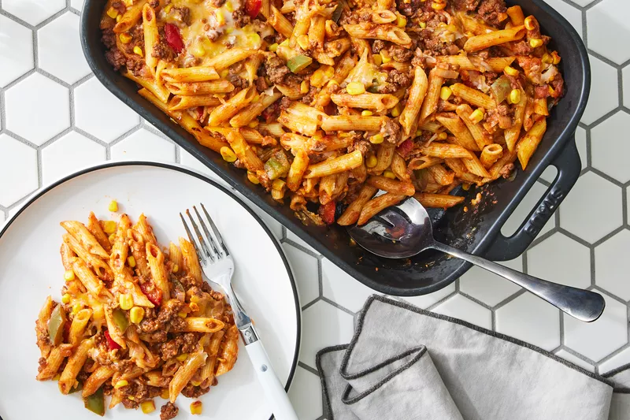

Home
Lazanya Recipe

Lazanya
Mükemmel bir tarifle hazırlanmış lazanya yemeğinin son hali Afiyet olsun...
Lazanya Tarifi İçin Malzemeler
İç Harcı için
- 400 gr Kıyma
- 3 yemek kaşığı sıvı yağ
- 2 adet kuru soğan
- 2 adet domates
- 2 yemek kaşığı domates salçası
- 2 diş sarımsak
- 1 tatlı kaşığı tuz
- 1,5 su bardağı sıcak su (300 ml)
Başemal sosu için
- 2 yemek kaşığı tereyağ
- 3 su bardağı süt
- Yarım su bardağı un
- 1 çay kaşığı tuz
- Yarım çay kaşığı karabiber
Üzeri için;
- 1 su bardağı kaşar rendesi
Lazanya Tarifi Nasıl Yapılır?
- İç harcı için geniş bir tavaya sıvı yağı alalım. Küçük küçük doğradığımız soğanları ilave edelim, biraz kavurduktan sonra üzerine kıymayı ilave ederek kavurmaya devam edelim.
- Kıymalar yeterince kavrulunca doğradığımız sarımsakları ve kabuğunu soyup doğradığımız domatesleri de ilave edelim ve orta ateşte 5 dakika kadar daha soteleyelim.
- Üzerine salçayı ve tuzu ekleyerek kavuralım.
- Ardından suyunu ekleyelim ve iç harcımız suyunu çekene kadar kısık ateşte pişmeye bırakalım.
- Beşamel sosu için tereyağı ve unu küçük bir tencereye alalım ve orta ateşte kavurun.
- Üzerine sütü azar azar ekleyelim ve topaklanmaması için sürekli çırparak karıştıralım.
- Kaynamaya başlayınca tuz ve karabiberi ekleyelim. Muhallebi kıvamına gelince ocaktan alalım.
- Kıymalı sos ve beşamel sos hazırlandıktan sonra ısıya dayanıklı bir fırın kabına önce biraz iç harçtan yayalım.
- Üzerine çok az beşamel sostan gezdirdikten sonra lazanyaları dizelim.
- Lazanyaların üzerine biraz kıymalı iç harç ve ardından beşamel sos dökerek güzelce yayalım.
- Üzerine tekrar lazanya yapraklarından yerleştirelim ve tekrar iç hraç ve beşamel sostan gezdirelim. Bu işlemi malzemeleriniz bitene kadar devam ettirelim.
- En üstteki lazanyalara tekrar iç harç ve beşamel sos dökelim ve kaşar peyniri rendesi serpelim.
- Lazanyalarımızı önceden ısıtılmış 190 derece fırında yaklaşık 20-25 dakika pişirelim.
- Üzeri tamamen kızarınca fırından alalım ve 15 dakika kadar dinlendirelim.
- Ardından lazanyamızı dilimleyerek servis edelim. Afiyet olsun.
Not:Yapmadan önce paketin üzerini okumanızı tavsiye ederim, çünkü bazı lazanyaların haşlanması gerekebilir, eğer haşlanması gerekiyorsa orada belirtilecektir.